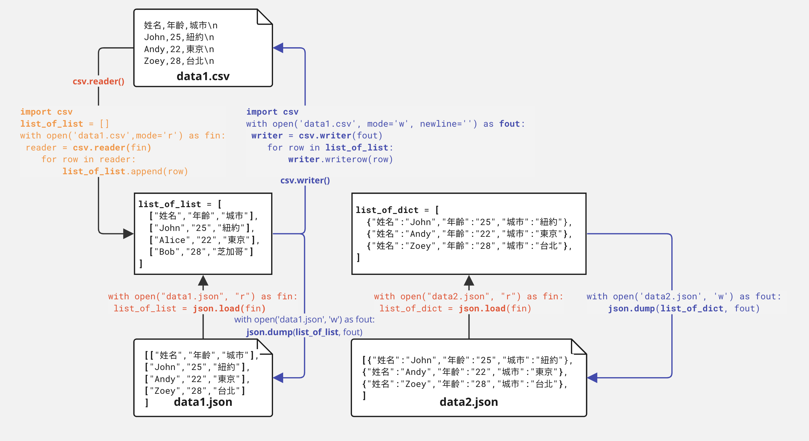
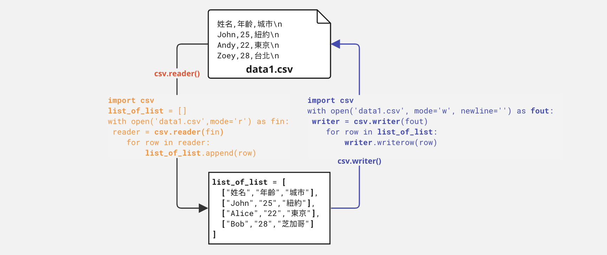
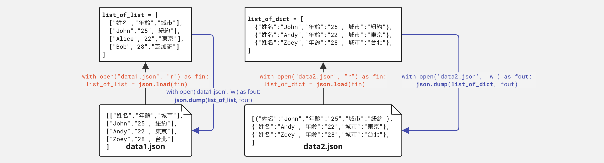

P05 READ Files#
Read Slide to know what is CSV and JSON
Open file
Read and wirte CSV
Read and write JSON
Read and wirte data to pickle
Load CSV and JSON by pandas
Convert data structures
1. 常見的檔案格式#
Text file 文字檔
文字檔是一種純文字格式的檔案，可以使用一般的文字編輯器讀取和編輯。
在程式開發中，你可以使用字串操作方法逐一寫入和讀取文字檔。
常見的文字檔格式包括CSV（逗號分隔值）、JSON（JavaScript物件表示法）、XML（可擴展標記語言）、TXT（純文字檔案）和HTML（超文本標記語言）。
Binary file 二進位檔
二進位檔是以二進位形式存儲的檔案，通常不能直接以文字編輯器讀取或編輯。
在程式開發中，你需要使用特定的函式或工具來讀取和寫入二進位檔。
常見的二進位檔格式包括Pickle（Python特定的暫存檔格式）、DB（資料庫檔案）、EXCEL（Microsoft Excel檔案）、Google Sheets（Google雲端試算表檔案）、PDF（便攜式文件格式）以及JPG和PNG等圖像檔案。
舉例來說，要讀取Microsoft Excel檔案，需要使用特定的程式或函式，如Microsoft Excel本身或Python的pandas函式庫。
Google Sheets也提供API，可以將其當作CSV檔案來讀取，這對於自動化數據處理非常有用。
純文字格式檔案#
當談到資料檔案格式時，CSV、JSON和XML都是純文字格式，這意味著它們的檔案內容以可讀的文字形式儲存，而不是以二進位格式儲存。以下是對這一點的進一步說明：
CSV（逗號分隔值）檔案格式
CSV檔案是純文字格式，其中數據以純文字的形式儲存，欄位之間使用逗號作為分隔符號。
這意味著CSV檔案可以輕鬆地用一般的文字編輯器打開和閱讀，因為它們的內容是易於理解的。
儘管CSV是純文字格式，但它可以用來儲存結構化的表格型資料。
JSON（JavaScript物件表示法）檔案格式
JSON同樣也是純文字格式，它的資料以純文字的方式儲存，並以物件表示法呈現。
JSON使用鍵-值對的結構，鍵和值之間使用冒號分隔，每個鍵-值對之間使用逗號分隔，這使得JSON易於閱讀和編寫。
JSON的純文字特性使它成為數據交換和配置文件的理想選擇。
XML（可擴展標記語言）檔案格式
XML同樣是純文字格式，其中資料以可讀的文字形式儲存，使用標記來標識資料元素。
每個XML元素包括開始標記和結束標記，並可以包含屬性，這使得XML適合表示複雜的層次性資料結構。
XML的純文字性質使其廣泛用於各種應用，包括配置文件、網頁內容、數據交換和設定檔。
總之，無論是CSV、JSON還是XML，它們都是純文字格式的資料檔案，可以用一般編輯器（如純文字文件）等開啟，容易閱讀和理解。
CSV format#
CSV是逗點分隔檔案，也可以是TAB分隔（.tsv檔），或者是;分隔。特色是不管資料內容如何，都必須被框架在二維的表格裡，xls或xlsx等Excel檔案或者google sheet檔案，都可說是這類格式的資料。標準的CSV檔案表示方法如同下方的紫外線資料。大約可以看見是個二維表格的樣子。
資料內容必須記錄資料變項名稱與資料值。第一列為變項名稱，以逗點分隔。在每列的最末還有一個隱藏字元為\n，其為換行符號。通常CSV檔案打開就是如以下為七個欄位的資料，一共有五筆資料。
SiteName,UVI,PublishAgency,County,WGS84Lon,WGS84Lat,PublishTime\n
花蓮,5.59,中央氣象局,花蓮縣,"121,36,48","23,58,30",2015-11-23 12:00\n
馬祖,4.49,中央氣象局,連江縣,"119,55,24","26,10,09",2015-11-23 12:00\n
高雄,4.39,中央氣象局,高雄市,"120,18,57","22,33,58",2015-11-23 12:00\n
玉山,8.14,中央氣象局,南投縣,"120,57,34","23,29,15",2015-11-23 12:00\n
臺南,4.45,中央氣象局,臺南市,"120,12,17","22,59,36",2015-11-23 12:00\n
JSON format#
JSON（JavaScript Object Notation）檔案格式是一種純文字格式，具有以下特性：
JSON檔案格式特性：
結構化資料表示： JSON以層次化結構來表示資料，通過物件和陣列的組合，可以表示複雜的資料結構，適用於不同層次的資訊。
人類可讀： JSON使用易於理解的key-value對結構，這使得JSON檔案易於閱讀和編寫，尤其對於開發人員和數據分析師來說。
簡潔性： JSON的語法相對簡單，並且不需要特殊分隔符號，比較不會因為分隔符號辨識問題而出錯。
廣泛的支援： JSON獲得了廣泛的支援，幾乎所有主要的程式語言都有相應的JSON解析和生成庫。
多用途性： JSON不僅可以用於資料交換，還可以用於配置設置、Web應用程序和API的數據傳輸等多個應用領域。
JSON相較於CSV的優點：
結構性： JSON允許表示複雜的、多層次的資料結構，而CSV主要用於表格型資料，對於複雜的資料結構不太適合。
標籤化資料： JSON中的鍵-值對使資料更有語義，因此更容易理解每個資料元素的含義，而CSV僅依賴位置來表示資料。
嵌套（Nested）支援： JSON支援巢狀結構，這意味著你可以在一個JSON物件中包含另一個物件，這對於表示層次性資料非常有用。
數據類型： JSON支援不同的數據類型，包括String、Numeric、True/False、Object, List與Dict，這使得它更靈活。
JSON相較於CSV的缺點：
文件大小： JSON的語法相對簡單，但它可能比CSV檔案稍微膨脹，尤其是在包含大量資料的情況下。
可讀性： 雖然JSON對於開發人員來說易於理解，但對於一般用戶來說，其可讀性可能不如CSV。
一般來說，JSON格式為了避免過長過大或過多的空白，會去除所有空白和換行符號來儲存。如以下相對應的例子
[{"SiteName":"花蓮","UVI":5.59,"PublishAgency":"中央氣象局","County":"花蓮縣","WGS84Lon":"121,36,48","WGS84Lat":"23,58,30","PublishTime":"2015-11-23 12:00"},{"SiteName":"馬祖","UVI":4.49,"PublishAgency":"中央氣象局","County":"連江縣","WGS84Lon":"119,55,24","WGS84Lat":"26,10,09","PublishTime":"2015-11-23 12:00"},{"SiteName":"高雄","UVI":4.39,"PublishAgency":"中央氣象局","County":"高雄市","WGS84Lon":"120,18,57","WGS84Lat":"22,33,58","PublishTime":"2015-11-23 12:00"},{"SiteName":"玉山","UVI":8.14,"PublishAgency":"中央氣象局","County":"南投縣","WGS84Lon":"120,57,34","WGS84Lat":"23,29,15","PublishTime":"2015-11-23 12:00"},{"SiteName":"臺南","UVI":4.45,"PublishAgency":"中央氣象局","County":"臺南市","WGS84Lon":"120,12,17","WGS84Lat":"22,59,36","PublishTime":"2015-11-23 12:00"}]
以下為前述CSV範例之相對的JSON格式檔案
[
{
"SiteName": "花蓮",
"UVI": 5.59,
"PublishAgency": "中央氣象局",
"County": "花蓮縣",
"WGS84Lon": "121,36,48",
"WGS84Lat": "23,58,30",
"PublishTime": "2015-11-23 12:00"
},
{
"SiteName": "馬祖",
"UVI": 4.49,
"PublishAgency": "中央氣象局",
"County": "連江縣",
"WGS84Lon": "119,55,24",
"WGS84Lat": "26,10,09",
"PublishTime": "2015-11-23 12:00"
},
{
"SiteName": "高雄",
"UVI": 4.39,
"PublishAgency": "中央氣象局",
"County": "高雄市",
"WGS84Lon": "120,18,57",
"WGS84Lat": "22,33,58",
"PublishTime": "2015-11-23 12:00"
},
{
"SiteName": "玉山",
"UVI": 8.14,
"PublishAgency": "中央氣象局",
"County": "南投縣",
"WGS84Lon": "120,57,34",
"WGS84Lat": "23,29,15",
"PublishTime": "2015-11-23 12:00"
},
{
"SiteName": "臺南",
"UVI": 4.45,
"PublishAgency": "中央氣象局",
"County": "臺南市",
"WGS84Lon": "120,12,17",
"WGS84Lat": "22,59,36",
"PublishTime": "2015-11-23 12:00"
}
]
2. Read/Write CSV#

2.1 Write data to CSV#
假設我有一個Nested List表示了一個包含學生姓名、年齡和城市的CSV資料。第一個子列表包含了標題行，接下來的子列表包含了學生的資料。我們使用這個資料來展示如何讀取和寫入CSV檔案。
student_data = [
["姓名", "年齡", "城市"],
["John", "25", "紐約"],
["Alice", "22", "洛杉磯"],
["Bob", "28", "芝加哥"],
["Eva", "24", "邁阿密"]
]
用以下程式碼可以將上述二維列表寫入CSV檔案中：
import csv：首先，我們導入Python的CSV模組，以便使用CSV相關的功能。with open('students.csv', mode='w', newline='') as file:打開CSV檔案：使用open函式打開一個名為students.csv的檔案，並指定檔案模式為寫入模式'w'，這表示我們將要創建或覆蓋現有的檔案。newline=''：這個參數確保在寫入CSV檔案時不插入額外的換行符號，以確保資料的一致性。建立CSV寫入器：使用
csv.writer函式創建一個CSV寫入器writer，以便寫入CSV資料。寫入資料：使用
for迴圈遍歷名為student_data的資料（在你的程式中應該有這個變數），然後使用writer.writerow(row)將每一行資料寫入CSV檔案。row代表要寫入的每一行資料。
import csv
with open('students.csv', mode='w', newline='') as file:
writer = csv.writer(file) # 建立CSV寫入器
for row in student_data:
writer.writerow(row) # 寫入資料
2.4 Read CSV#

當你有了名為 students.csv 的CSV檔案後，你可以使用Python的CSV模組來讀取它。這個程式會讀取 students.csv 檔案，跳過標題行，然後逐行顯示每位學生的姓名、年齡和城市。
import csv
with open('students.csv', mode='r', newline='') as file: # 讀取CSV檔案
reader = csv.reader(file) # 建立CSV讀取器
next(reader, None) # 跳過標題行
for row in reader:
print(f"姓名: {row[0]}, 年齡: {row[1]}, 城市: {row[2]}")
3. File path and mode#
3.1 File Path#
當我們在Python中讀取CSV檔案時，理解檔案路徑的概念變得非常重要。檔案路徑告訴程式碼在哪裡找到CSV檔案，而它可以分為兩種主要類型：絕對路徑和相對路徑。
絕對路徑（Absolute Path）：
絕對路徑是一個完整的檔案路徑，包含檔案所在的所有目錄。
這種路徑通常以根目錄（root directory）為起點，完整指定了檔案的位置。
例如，
C:\Users\YourName\Documents\students.csv是一個絕對路徑。
相對路徑（Relative Path）：
相對路徑是相對於目前工作目錄（current working directory）的路徑。
通常，Python會將檔案路徑解釋為相對於程式運行的目錄。
例如，假設我們的Python程式和CSV檔案都在同一個目錄下，那麼只需指定檔案名稱，如
'students.csv'，就可以使用相對路徑。
相對路徑的情形#
我們把前面讀取檔案的程式的檔案位置拉出來為一個變數，並且使用相對路徑來讀取檔案。
狀況一：
檔案和程式（.ipynb或.py）在同一個目錄下
file_path = 'students.csv'
with open(file_path, mode='r') as file:
reader = csv.reader(file)
for row in reader:
print(row)
狀況二：
程式（.ipynb或.py）和資料夾data在同一個目錄底下，而資料夾data底下有檔案students.csv。
file_path = 'data/students.csv'
狀況三：
程式（.ipynb或.py）被放在資料夾src中，而src資料夾和data資料夾被一起放在project_a底下。資料夾data底下有檔案students.csv。..在相對路徑的意義代表上一層目錄。如果是../..則代表上兩層目錄。
file_path = '../data/students.csv'
3.2 File Mode#
開啟檔案時，需要先開啟該檔案，並指到一個變數，例如下例中的f，並且指定要用什麼讀取模式來開啟檔案。
相關說明可見Python-File Handling
讀寫模式主要有三種：
r表讀取、w表直接從頭覆寫寫入、a為寫入新資料在檔案最後（Append的意思）。
後面跟著一個
b的代表是binary檔案，例如wb、rb，初學者比較少用到，html、json、txt、csv等都是文字檔案，都不是binary檔案；如果是pdf、bin、docx就都是binary檔案。如果後面跟著一個
+的，r+代表可讀寫、w+代表可讀寫，且寫入時如果沒有該檔案，他會自動建立該檔案。
4. (Optional) Read/Write List of Dict to CSV#
但List of List不是最常見的表達資料型態，反而是List of Dict。因為Dict的Key可以當作欄位名稱，而Value則是資料值。因此，我們可以將List of Dict寫成成CSV檔案，也可以將CSV檔案讀取成List of Dict。
student_data = [
{"姓名": "John", "年齡": "25", "城市": "紐約"},
{"姓名": "Alice", "年齡": "22", "城市": "洛杉磯"},
{"姓名": "Bob", "年齡": "28", "城市": "芝加哥"},
{"姓名": "Eva", "年齡": "24", "城市": "邁阿密"}
]
3.1 Write List of Dict to CSV#
student_data 資料為一List of Dict。在 csv.DictWriter 中，要先指定標題行的欄位名稱，然後使用 writer.writeheader() 寫入標題行。接下來，要遍歷 student_data 中的每一個Dict所存放的資料，並使用 writer.writerow(row) 將每個字典的內容寫入CSV檔案中。
import csv
with open('students.csv', mode='w', newline='') as file:
fieldnames = student_data[0].keys()
writer = csv.DictWriter(file, fieldnames=fieldnames)
writer.writeheader() # 寫入標題行
for row in student_data:
writer.writerow(row)
3.2 Read CSV as List of Dicts#
若要從 students.csv 中讀取資料並儲存在 List of Dictionaries 中，你可以使用以下程式碼：
import csv
student_data = [] # 建立一個空的 List 來儲存資料
with open('students.csv', mode='r', newline='') as file:
reader = csv.DictReader(file)
for row in reader:
student_data.append(dict(row))
這個程式碼首先建立了一個空的List，然後使用 csv.DictReader 讀取 students.csv 中的資料行，每一行都轉換為Dict，並將其添加到 student_data List 中。最後，它遍歷 student_data 並顯示每位學生的資料。
5. Read/Write JSON#

5.1 Open file firstly#
無論是讀入資料或寫出資料，都要先開啟檔案（如open('sample.json', 'w')）。檔案開啟後，才可以將資料寫入。完整的寫法如下：
with open('sample.json', 'w') as fout:
json.dump(sample_data, fout)
通常把資料寫到檔案中稱為dump out（或者save、write視程式語言的函式而不同），而把資料從檔案中讀成程式語言所能處理的結構則稱為load（或read）。
5.2 Dump (Write-out)#
json.dump 和 json.dumps 都是用於將 Python 資料結構轉換為 JSON 格式的函式，但它們有一些不同之處：
json.dump(obj, fp)：將 Python 資料結構轉換為 JSON 格式並寫入指定的檔案中。它會將 JSON 資料寫入檔案，不會返回 JSON 字串。json.dumps(obj)：將 Python 資料結構轉換為 JSON 格式的字串。它不會將 JSON 寫入檔案，而是將 JSON 字串返回給你。
import json
sample_data = [
{"site":"基隆","AQI":38,"PM25":8},
{"site":"新店","AQI":40,"PM25":9},
{"site":"苗栗","AQI":76,"PM25":11}]
with open('sample.json', 'w') as fout:
json.dump(sample_data, fout)
5.3 Load (Read-in)#
讀取JSON則分讀取字串和直接讀取檔案兩種：
json.loads(str)讀取字串：例如像讀取ubike的線上資料，就是先把抓回來的資料轉文字後當成字串讀取入json。json.load(f)直接讀取檔案：例如適才把一個list of dictionary存成json後，可以用json.load(f)讀成python的list of dictionary
範例程式碼如下
with open("sample.json", "r") as f:
new_data = json.load(f)
new_data